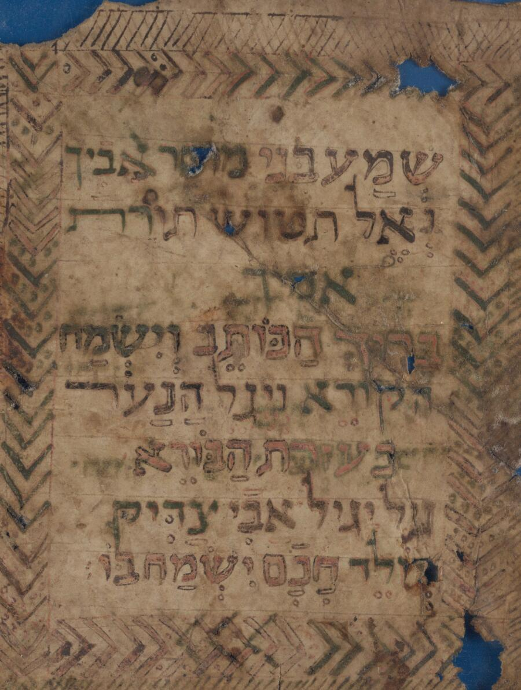

Call for Papers
Tel Aviv University, 13–14 December 2026. An international conference on computational research into medieval Hebrew manuscripts, held at the midpoint of the ERC Synergy project MiDRASH.
Abstract deadline
To be announced
Notification
To be announced
Full paper deadline
To be announced
Conference
13–14 Dec 2026
Scope
The subject
Computational research on medieval Hebrew manuscripts has made great advances over recent years, including for the tasks of handwritten text recognition, automatic layout and segmentation, computational paleography, textual analysis, and more. Current research affords opportunities to better access digitized manuscripts and to trace the developments of literature and scribal tradition over time and space, opening new horizons in history, culturology, and other disciplines.
Wonders of Computational Manuscriptology is an international conference centered on results achieved during the first half of the ERC-supported MiDRASH project and challenges to be faced during the second half. It will focus on recent advancements and breakthroughs in the field, including methods for textual and para-textual research developed across various areas of computer science, as well as the challenges posed by Hebrew paleography.
Of particular interest are evaluations of computational results by humanists, as well as cases in which a human expert surpasses the capabilities of artificial intelligence and vice versa.

Topics
We welcome contributions on
Reading the page
- Handwritten text recognition for Hebrew, Aramaic and Judaeo-Arabic hands
- Automatic layout analysis, line and zone segmentation
- Ground-truth production, transfer learning and low-resource training
- Recognition on damaged, palimpsested or multi-hand material
Describing the hand
- Computational paleography: script typology, dating, localisation
- Scribal-hand identification and writer verification
- Quantitative description of letterforms and ruling
- Codicological features detected at scale
Tracing the text
- Alignment, collation and automated stemmatics
- Text reuse, citation and intertextuality across corpora
- Para-textual research: glosses, colophons, catchwords, marginalia
- Modelling transmission over time and space
Judging the result
- Evaluation of computational output by humanists
- Cases where a human expert outperforms AI — and where AI outperforms the expert
- Error analysis, uncertainty and provenance of automated claims
- Interfaces, infrastructure and open datasets for manuscript research
Submission
How to submit
- Prepare an abstract of 500 words maximum, including the bibliography.
- Send it to the conference address as a PDF, with your name, affiliation and the title of the contribution.
- Accepted contributions are presented as a poster with a short talk; demos are warmly encouraged.
- Submit a full paper by the second deadline for the proceedings volume.
Where to send it
Submission address To be announced
Proceedings
Conference proceedings will be published in Electronic Notes in Theoretical and Applied Informatics and Computer Science (ENTICS).
At a glance
Questions about scope or fit are welcome before you write — see the FAQ or contact the organisers.
Not sure whether it fits?
If it involves a manuscript and a computer, it probably does. Ask us.